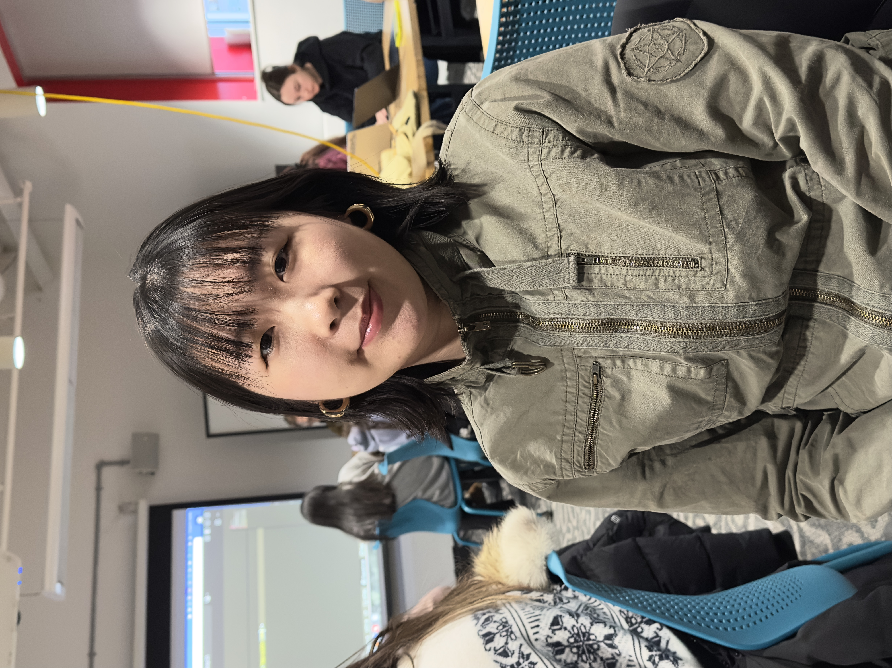

What music do you like to listen to while working?
Alternative and chill R&B
Name three designers whose work you find inspiring.
Name something (a format, an item) you want to learn how to design but haven't had the chance to try to yet.
If you were a font, you'd be (you can't say helvetica or comic sans-- both jokes are played). Explain why?
Coolvetica , its the cooler version of Helvetica and it is not boring
Name one website that you rely on (try to avoid a platform like google/amazon/pinterest/etc).
What one design skill you wish you had focused on earlier ?
[Take a photo of your interviewee]
